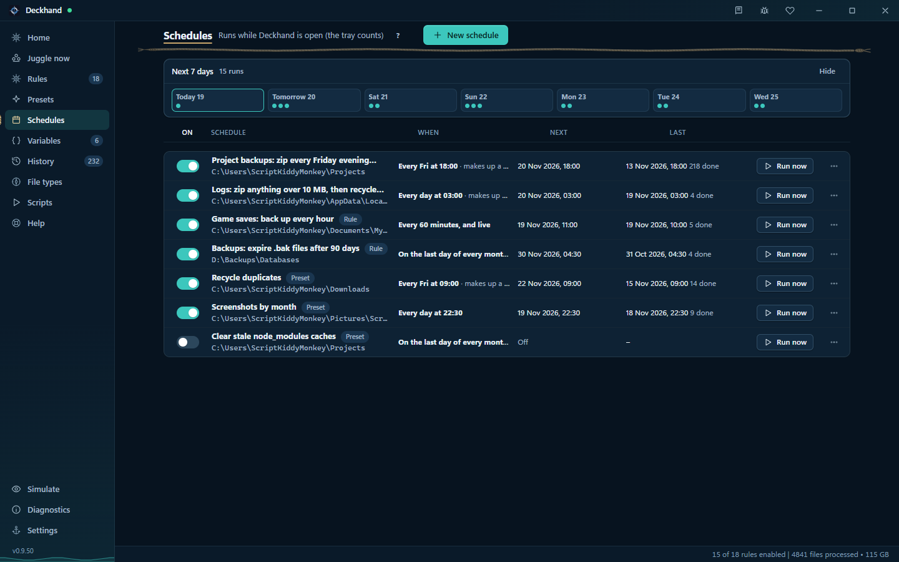
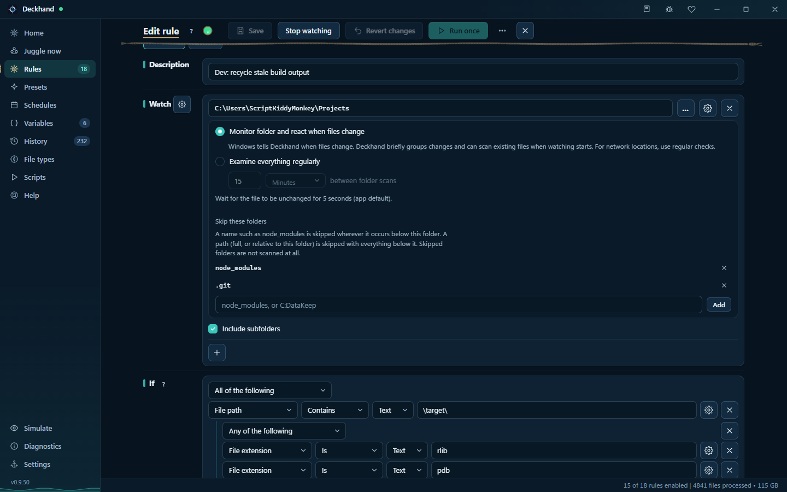

Rules, folders and watching
How a rule decides when to look at your files, and what order rules run in.
A rule watches one or more folders and handles the files that match its conditions. Switch it on and it handles the files already in its folders, then keeps watching.
The Rules page lists your rules grouped by topic, in run order. Each row has its switch, the actions, the watched folders and a live status line. The screenshot shows the groups Downloads, Documents and the start of Media. The groups Development and Housekeeping follow further down. A rule that is switched off, such as Invoices to Documents, shows Stopped, and a rule that needs attention, such as Scans, has an amber status.

What a rule contains
| Part | Question it answers |
|---|---|
| Watch | Which folders does it look at, and does it include subfolders? |
| If | Which files does it handle? See Conditions and exclusions. |
| Then | What happens to each matching file? See Actions and conflicts. |
| Exclusions | Which files must it never touch? |
| Schedule (optional) | Should it also run at set times? |
Three ways a rule looks at files
| Mode | How it works | Use it when |
|---|---|---|
| Live | Deckhand is told when files in the folder change and reacts. This is the default. | New files should be handled soon after they arrive. |
| Rescan | Deckhand re-scans the folder every N minutes. | The folder is on a network drive or another place where live notifications are unreliable. |
| Schedule | The rule runs at set times: daily, on chosen days, on a day of the month, or every few minutes or hours. | You want a tidy-up at a fixed time. |
The rule Project backups: zip every Friday evening is scheduled and does not watch live. The screenshot shows its Schedule section: On chosen days at 18:00 with Fri selected, Run at start if a run was missed ticked and Also watch the folders live not ticked.

A schedule can run with or without live watching. Run at start if a run was missed makes up one run that was due while Deckhand was closed. Deckhand has to be running, and running in the tray counts.
The Schedules page lists everything that runs at a set time, presets and rules together, with the next and last run and a Run now button.


Files are waited for
Deckhand never moves a file that is still being copied or downloaded.
- A file waits until it has been unchanged for a number of seconds. The default is 15. You can change it in Settings, or per rule with the gear next to the watch folder.
0means do not wait. - Files with an unfinished extension such as
.crdownload,.partor.tmpare left alone. - Locked files and online-only cloud files are left alone too.
- Hidden and system files are skipped unless you allow them in Settings.
A rule that is waiting says so in its status. It is not marked as needing attention. In a preview, such files are listed under Not ready.
Rules run top to bottom
Every enabled rule sees every file in its folders, in the order shown on the Rules page. The number in the Runs column is the position.
- A file moved by rule 1 is then seen by rule 2 at its new location.
- Each rule handles a file once per modified time, so a rule does not loop on a file it has already handled.
- There is no "stop processing" step. To keep two rules from handling the same file, make their conditions exclusive.
To change the order, drag a row, press Alt+Up or Alt+Down, click the number and type a new one, or use Move to position in the ... menu. Switched-off rules keep their number.
Folder options
- Include subfolders also watches folders inside the watch folder.
- Skip folders (the gear next to the watch folder): a bare name such as
node_modulesis skipped wherever it occurs, and a path is skipped with everything under it. Skipped folders are not scanned, so they cost no time. The screenshot shows the gear of the rule Dev: recycle stale build output opened. Under Skip these folders the namesnode_modulesand.gitare listed, and a box adds more.


- Ignore files already in the folders this rule moves to is on by default. It stops a rule looking again at files that already sit in its own destinations. If you drop a file straight into a destination folder, the rule will not touch it. Turn the option off if you want it to.
- Portable paths such as
~Downloadsand~Documentsfollow the current Windows user.
Switching a rule off while it works
The switch follows your click at once. While Deckhand winds down you see Stopping..., then Stopped. A file that was stopped is shown as Stopped in History. It is not a failure, and nothing is left half done. The file is looked at again when you switch the rule back on.